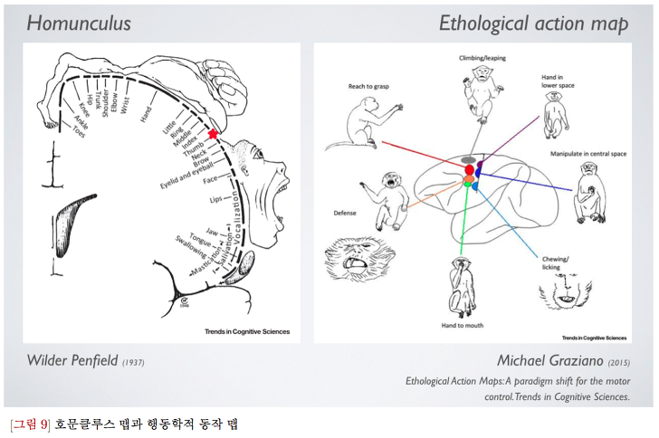

<게슈탈트 시리즈 원작은 이문규 선생님께 있다는 것을 미리 알립니다.>
전편과 이어집니다.
<신경계의 협응구조>
Muscle을 turn off,on 하는 곳이 어디냐고 물어본다면 대부분 Frontal cortex에 있는 M1(primary motor cortex)을 생각합니다.
M1은 몸지형학적(topographycally)로 되어 있습니다. 다른말로는 투사되어 있다고 합니다. 각 신체 영역이 차지하는 영역을 비율적으로 그린 것이
바로 호문클루스motor homunculus 입니다.
호문클루스는 1937년 와일더 펜필드가 뇌 겉질 특정영역에 전기자극을 주었더니 몸의 특정영역이 1대1로 발화한다는 것을 확인했습니다.
왼쪽 그림에서 얼굴있는 부위를 자극하면 얼굴이 수축하고 손을 자극하면 손이 수축하는 것이죠.
하지만 마이클 그라찌아노는 최근 "A paradigm Shift for the motor cortex"라는 공격적인 제목의 논문을 발표했습니다.
그의 주장에 따르면 M1은 호문클루스 처럼 정확하게 딱 떨어지게 몸의 지도를 갖고 있지 않다고 합니다. 대신에 M1에는 행동학적 동작 지도가 그려져 있다고 주장합니다.
인간의 움직임은 차례대로 일어나는 일련의 근육 활동입니다. 이 일련의 근육 활동은 협응적으로 나타납니다.
이렇게 실제 일어나는 움직임은 호문클루스 관점에 따른 단일 근육 수축보다 훨씬 복잡합니다.
새로운 패러다임에서는 M1 특정 부위를 자극하면 행동학적 동작이 나온다고 합니다. 각 영역을 자극하면 손을 입으로 가져간다든지, 손을 뻗는다는지, 긴다든지 처럼 행동이 나온다고
합니다
그라찌아노의 연구는 비교적 긴 시간동안 강한자극을 했기 때문에 주변의 다른영역까지 동원되어서 그런 것이라고 부정하는 사람들도 존재하긴 합니다.
실제로 우리 몸이 협응적으로 움직이고 뇌영역에도 특정 분절이 아닌 동작이 코딩 되어 있다면 우리의 실무를 무엇이 달라질까요?
다음편에서 계속